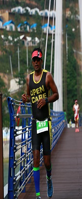

Welcome to UST Global APR Marathon 2018

This year the annual APR Marathon is on Dec 2nd 2018.
Register NowHistory:
8 Years ago, a few like-minded people in Adarsh Palm Retreat got together with the idea of organizing an event, which would engage the community in a fun yet healthy way, but would also raise funds for some community service/ causes in order to give back to the world around them.
This is the grassroots beginning of the APR Marathon (formerly called as Walkathon), which has now become an annual, cross-community event, and is the flagship fundraiser event of the APR Charitable Trust (ACT).
APR Marathon Race Details
- APR Marathon Registration and Bib Pickup:
- Race timing:
- Race Route:
- Contact: AprMarathonSupport@googlegroups.com
5:45 AM - Half Marathon
6:00 AM - 10 K
8:15 AM - 5 K
9:00 AM - 1 K
6:00 AM - 10 K
8:15 AM - 5 K
9:00 AM - 1 K
Half Marathon:

10KM:

5KM:

1KM:

APR Marathon - Know your people
Race Director |
|
|---|---|
| Nirupma believes running gives her mental relief, releases stress and fills her with inner peace. A mother of 2 boys, with the typical household challenges, but life changed since she joined aerobics. She took up running from 2009 and since then she has run many races in India. Now she is a podium finisher, in most of the events she participates in. She believes that, any fitness regime to stay fit will help develop physical strength and also makes you a strong runner. She discourages runners from consuming refined sugar, saturated fat and smoking. Focus on good carbs, protein, fruits and salads and drink tons of water the whole day. Nirupma is trainer for past 16 years. She owns many trainer certificates: Certified advance personal trainer Licensed Zumba instructor Reebok certified Holds certificate in Pilates , stability ball training and resistence band training Pursuing ACE certification And training for kettle bell and barbell certification called the Big lift certification by proton fitness academy Running coach Name of training school - Decathlon Fitneskool Runners based at Decathlon Sarjapur Road Podium finisher in the running events that is held across the country in the distance category of 10 km , 21 km and 42 km races. Personal best timing for 5 km - 21 min 45 sec 10 km - 45 min 13 sec 21 km - 1 hour 34 min 42 km - 3 hour 36 min Boston qualifier for the past 2 years Conducts session at Adarsh Palm Retreat for past 9 years Have been winning podium in the major national events in the amateur category Standard chartered mumbai marathon Now called Tata Mumbai Marathon Airtel Delhi Half Marathon Bengaluru Tougher 10 k Challenge Spirit Of Wipro Run Fitness is my passion my calling and my profession Her email ID is singh.nirupma@gmail.com and people can reach out to her for running tips. FB: https://www.facebook.com/nirupma.singh.33?fref=ts | |
Race Flagoff |
|
|  | Raghu, is an entrepreneur and a sports enthusiast.He started running long distance in 2007 and since then has completed several marathons including Standard Chartered Mumbai Marathon, Kaveri Trail Marathon, Delhi Half Marathon, Skinny Turkey Raleigh Marathon and several others. In the last two years, he started taking part in triathlons (Swim, Bike and Run) has successfully completed one Full Iron Man, couple of Half Iron Man and few Olympic distance triathlons. He is looking forward to the next set of challenges. |
Half Marathon Pacer - 2 Hrs |
|
 |
Salil Punalekar is a technology professional and an avid runner who has been running marathons for over 10 years. He's run several marathons including Standard Chartered Mumbai Marathon, Kaveri Trail Marathon, New York City Marathon, San Jose Half, San Francisco Marathon and several other runs acrossUS and India. His personal best timing for half marathon was at San Jose Rock & Roll Half Marathon (1H 47M) in 2012, and for full marathon at Standard Chartered Mumbai Marathon (3 HR 58M) in 2013. He splits his time equally between New York City and Bangalore, both of which are mecca for runners with spectacular running locations. Salil's best timing is 3:58 in NYC marathon in 2017. |
Half Marathon Pacer - 2 Hrs 15 Mins |
|
| Rajesh | Rajesh will pace Half Marathon apart from being the Race Director. |
10K Pacer - 1 hr |
|
 |
Sriram started running since 2011, did a 10K during that year, graduated to full marathon the following year. So far done 6 Full Marathons with the PB of 4hrs and 8 mins @ BLR marathon 2015. Done several HMs and 10Ks along the way. Best HM timing is @ Spirit of Wipro 2015, bengaluru with 1 hr : 50 Mins. This year Sriram completed Bengalure 10K challenge under 50 mins. |
10K Pacer - 1 Hr 15 mins |
|
| Jyoti Kopparapu ia a resident of APR villa from last four years. She teaches Pilates at the club house and I try to inspire women who would like to run / jog and do marathons. She Has formed a running group and the members run very regularly and register for all kinds of runs be it for charity or fun or as a passion. She has been running for last six years and so far has done 10 half marathons and eight 10k. | |
10K Pacer - 1 Hr 20 mins |
|
| Manish Started running in 2010 with 5K run, and subsequently did many 10K, Half and Full Marathon subsequently. Since 2014, i switched to running barefoot and enjoying it thoroughly. I have run Kaveri Trail, Mumbai marathon, and our own Bangalore Marathon. Below are some distances and respective timings: 10K - 47 mins 31 Secs Half Marathon - 1 Hr 58 Mins Full Marathon - 4 Hr 31 Mins | |